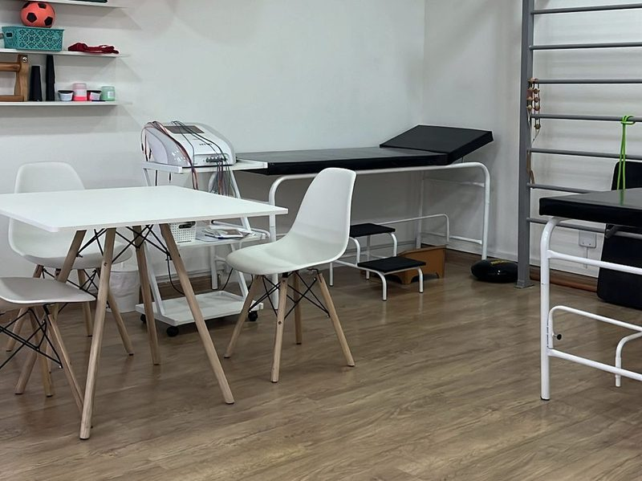
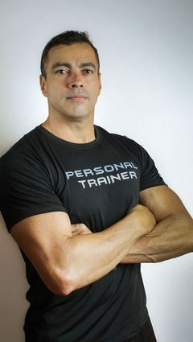
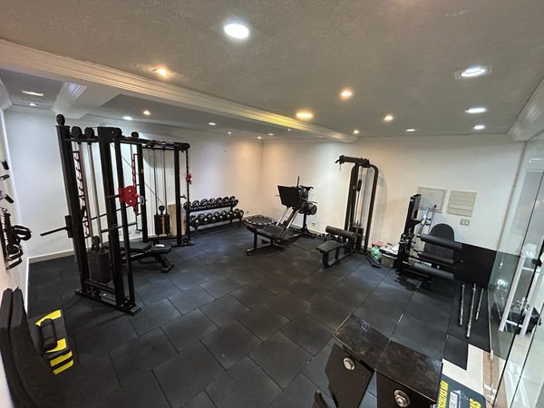
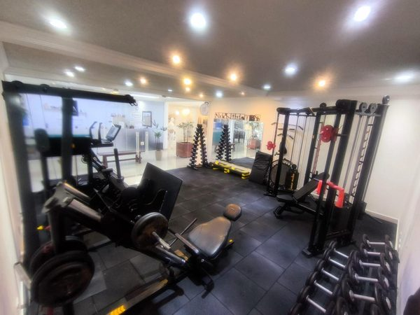
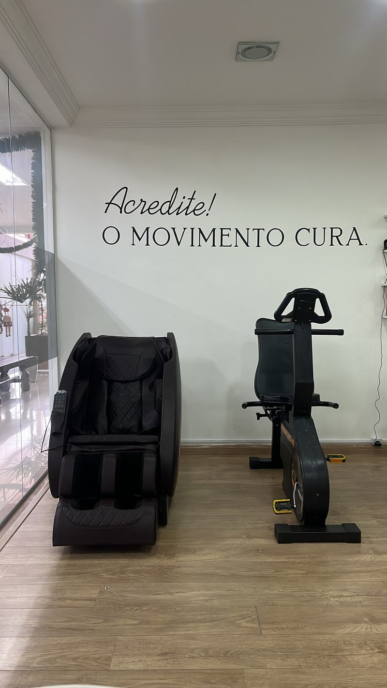
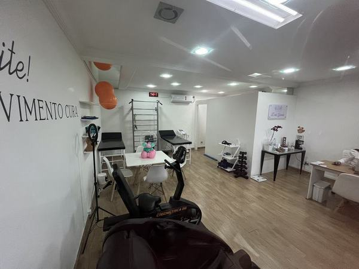
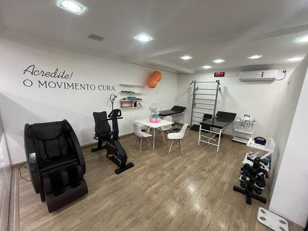
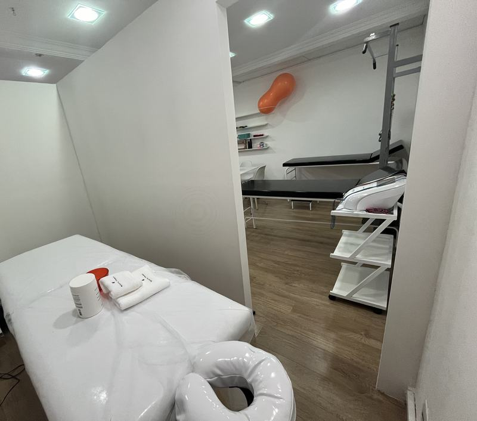
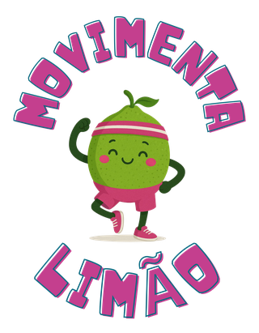

Fisioterapia & Reabilitação — Limão, SP
Fisioterapia, reabilitação e acompanhamento multidisciplinar no coração do Limão — mobilidade, alívio da dor e a confiança da sua rotina de volta.

+5.000
pacientes reabilitados
Fisioterapia, treino e acupuntura na mesma equipe, com um único plano pensado pra sua recuperação.
Fisioterapia, treino físico e acupuntura na mesma clínica.
Tratamento desenhado pra sua dor, sua fase e sua rotina.
Equipamentos de reabilitação, eletroestimulação e treino no local.
Horário estendido pra encaixar no seu dia — sem faltar no trabalho.
Cuidado completo, do início ao fim da sua recuperação.
Pra quem tem dificuldade de locomoção levamos a mesma estrutura de atendimento até o conforto de casa, nas regiões:
Uma equipe, um só objetivo: seu movimento de volta.
Fisioterapeuta & Fundadora
Ortopedia e Traumatologia — Santa Casa de SP
14 anos de experiência
Idealizadora do Movimenta Limão, projeto de ações de saúde pro bairro
Fisioterapeuta
UNIFESP · Mestrado pela UNICAMP
Especialista em Gerontologia

Personal Trainer & Cofundador
Educação Física · Bombeiro Militar
Acupunturista
Pós-graduada em Medicina Tradicional Chinesa
10 anos de experiência
Metodologia própria da Fisioterapia Dias Gomes
Na Dias Gomes não trabalhamos com sessões soltas. Cada pessoa é única e merece um plano de tratamento personalizado — que começa muito antes do primeiro exercício. Por isso criamos o Método R.O.T.A.: quatro etapas para que o cuidado tenha propósito e resultado real.
R
O nosso Mapeamento Funcional: investigamos a dor, as limitações, o histórico e como o seu corpo está funcionando — não só onde dói, mas o que pode estar contribuindo pro problema.
O
Explicamos com clareza o que encontramos, quais são os objetivos do tratamento e quais mudanças serão importantes ao longo do processo. Você entende o seu próprio corpo.
T
Escolhemos técnicas, exercícios e recursos de acordo com aquilo que você realmente precisa — não um protocolo igual pra todo mundo.
A
Acompanhamos sua evolução e ajustamos as estratégias sempre que necessário. O objetivo não é cumprir um número de sessões — é recuperar movimento, função, segurança e qualidade de vida.
Você não precisa apenas de fisioterapia. Precisa de uma R.O.T.A.
Agendar mapeamento funcionalAmbiente equipado pra cada etapa da sua reabilitação.







Projeto social da Juliana
O Movimenta Limão é um projeto social independente da clínica, criado pela Juliana dentro do trabalho de fortalecimento de marca e posicionamento da Dias Gomes no bairro. A proposta é ajudar a divulgar tanto os serviços da clínica quanto ações de saúde oferecidas à comunidade do Limão, levando cuidado pra além das nossas portas.
Avaliações de pacientes de verdade, publicadas direto no nosso perfil do Google. Vale a pena conferir.
Ver avaliações reais no GoogleNo Limão, fácil de chegar.
R. Roque de Morais, 131 - Loja 01 - térreo
Limão, São Paulo - SP, 02675-031
| Segunda a sexta | 08:00–20:00 |
| Sábado | 09:00–15:00 |
| Domingo | Fechado |
Atendimento somente com horário agendado — só há movimento na clínica durante os atendimentos marcados.
Atendimento particular — não atendemos convênio.
Agende seu mapeamento funcional agora e comece sua reabilitação com quem entende do assunto.
AGENDAR PELO WHATSAPP